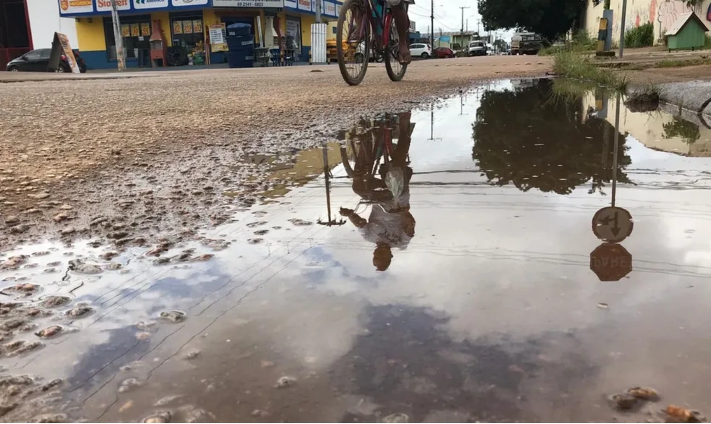

Ocorrência #CC-489201
Desperdício de água e alagamento na Avenida Nambu

Desperdício de água na avenida Nambu
📍 Localização: Avenida Nambu, próximo à casa de Círlene do bar - Apicum-Açu, MA
Descrição do Problema:
Situação relatada por moradores que ocorre de forma recorrente há anos. Trata-se do acúmulo e vazamento de água limpa na via devido a torneiras e mangueiras deixadas abertas indevidamente, gerando poças, erosão no calçamento e desperdício de recurso hídrico valioso para o município.
Histórico de Atendimento da Prefeitura:
1. Ocorrência Registrada pelo Morador
28/08/2026 às 09:15 - Protocolo gerado com foto anexada.
2. Triagem e Encaminhamento
29/08/2026 às 14:30 - Encaminhado para a Secretaria de Infraestrutura e Meio Ambiente.
3. Inspeção Técnica Agendada
31/08/2026 às 10:00 - Equipe de conscientização e fiscalização enviada ao local.
4. Resolução e Reparo Final
Previsão: Ajuste de rede de distribuição e orientação aos moradores.
Esta ocorrência afeta a sua rua também?
Apoie para aumentar a prioridade no painel da prefeitura!
42 moradores apoiaram este relato.